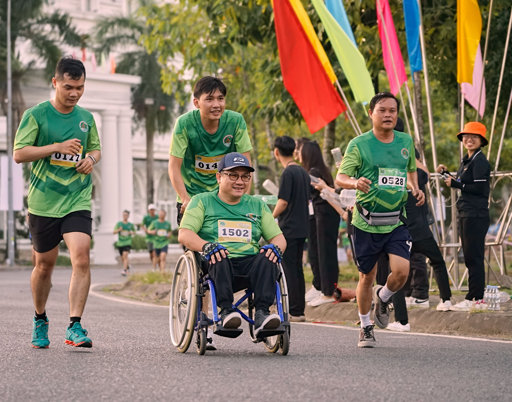

The "Color Me Green" run is an annual event held on the UNCG campus to promote health and wellness in the community. Participants are encouraged to wear green and enjoy a fun-filled day of running, activities, and community engagement. Whether you want to run casually or competitively, this event has something for everyone. The run is open to all ages and skill levels, making it a great opportunity for families and friends to come together and support a healthy lifestyle. Family and group Participants are highly encouraged to join in the festivities, making it a great opportunity for friends and families to come together and support a healthy lifestyle. Food trucks and local vendors will be present, offering a variety of refreshments and goods for attendees to enjoy. Our event also features live music and entertainment, creating a lively and festive atmosphere for all participants. Additionally, a dedicated Kids' Zone will provide fun activities for children, ensuring that everyone has a memorable experience.
"I had an amazing time at the Color Me Green run! The atmosphere was extremely vibrant, and it was great to see so many people come together to support a healthy cause. I especially loved the live music and the variety of food trucks. I feel like this event sparked a new passion for running in me. I can't wait to see what other cool events GboroRunClub has in store!"Return to the Community Guide Home Page